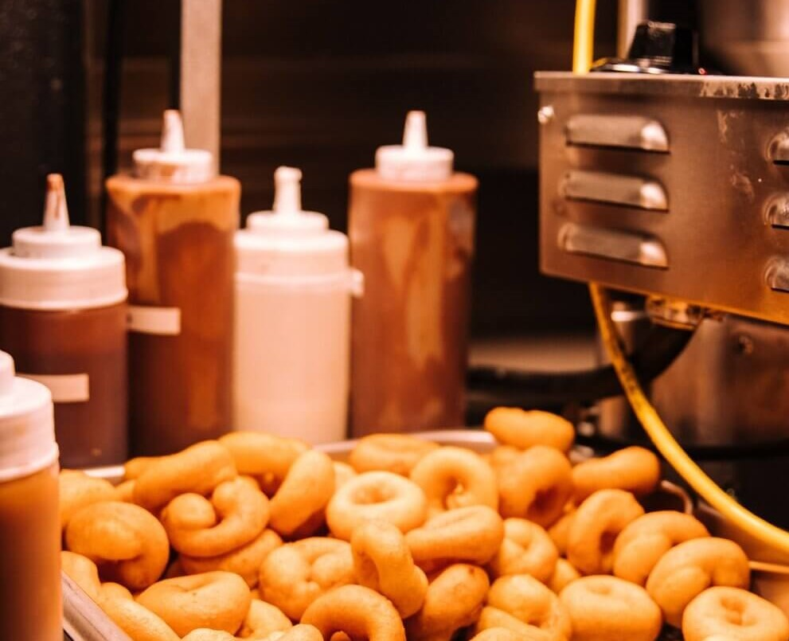
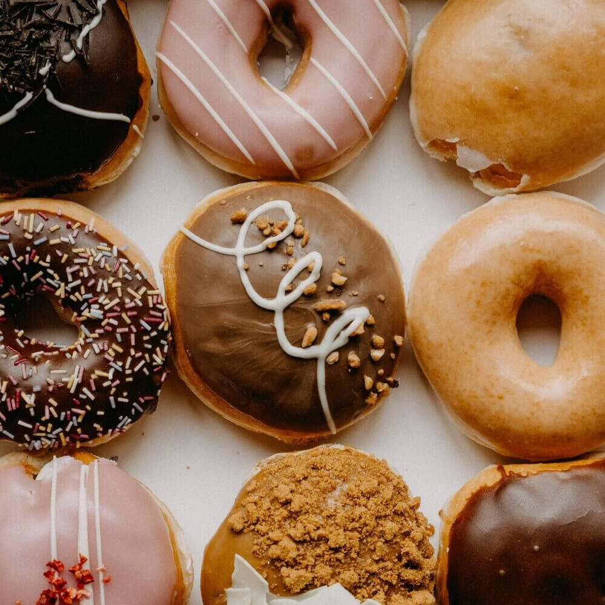

Becoming a Donut Artisan
Beaver tails, Cougar Tails, Timbits, Bunuelos, Crueller, Puff-Puff, Berliners, Loukoumades, Beignets, Malasada, Oliebollen, Koeksister… and of course Donuts!
These are just some names of different sweet doughs that are fried and filled, glazed or decorated from around the world. Have you ever tried any of these delicious, doughy sweetness?
Here in the United States they are known more commonly as donuts. This website will hopefully give you the courage to give it a go at making your own special treats. Whether you want to pursue being a donut artisan as a professional career or as a home hobby, anyone can have a successful career or hobby in donuts!
 This site will help to cover the basics and hopefully give you the confidence to give it a go. It is a rewarding job and hobby, not just a delicious treat, but a joy to do and make.